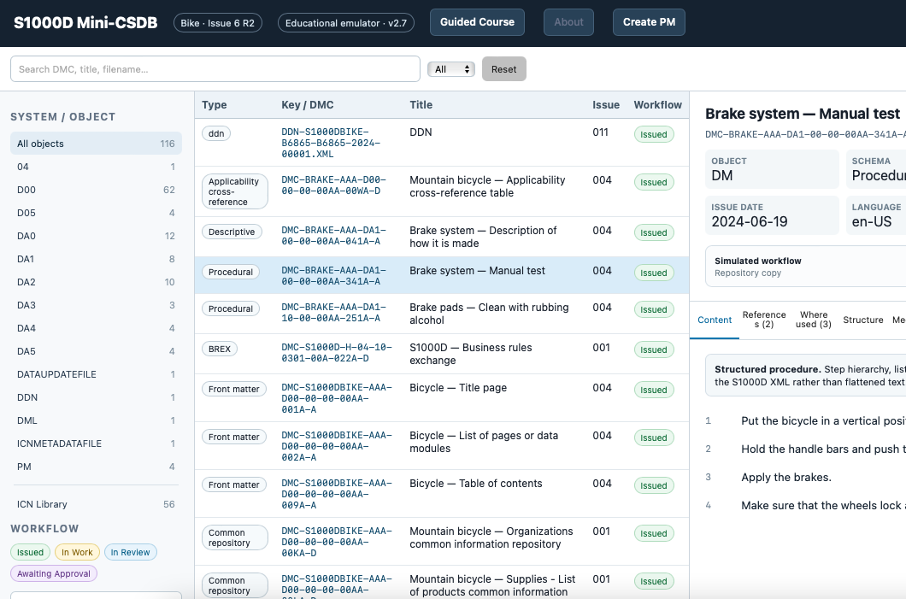

A collection of S1000D and ILS projects, structured documentation case studies, Simplified Technical English tools, and DITA/XML manuals — built as part of my transition into technical information and ILS roles in defence, aerospace, and other complex technical environments.
I have 13+ years of experience in IT support, troubleshooting, identity management, and internal documentation. I am building on that practical background toward technical documentation and ILS, with a particular focus on structured information and technical authoring.
I learn technical standards by building with them. The projects below combine practical exercises, working tools and structured documentation cases covering S1000D, ILS, ASD-STE100, DITA/XML and professional authoring workflows.
I wanted a practical way to understand how S1000D information connects inside a CSDB. This browser-based sandbox uses the Issue 6 Bike sample dataset to explore data modules, publication modules, ICNs, references, where-used relationships, issue history, source XML and a controlled author > review > approval workflow.

TechAuthor Learner is an Arbortext-like training environment where content is created through structured elements rather than free-form formatting, making XML document structure and professional authoring workflows easier to understand in practice. It progresses from 100 core editor drills to guided S1000D practice and realistic structured-authoring scenarios that require independent problem-solving.
Launch TechAuthor Learner >Impact Trace is an interactive training tool for exploring how engineering changes can affect technical documentation. It follows links between engineering sources and published information, highlights likely impact areas, and lets the user review the evidence before deciding whether documentation needs to change.
Launch Impact Trace >Applicability Lab is a hands-on way to understand how S1000D content is matched to a product configuration. Short exercises build from the basic ACT, CCT and PCT roles to realistic cases where product attributes and conditions determine which data modules apply.
Launch Applicability Lab >STE Compass explores which ASD-STE100 checks can be applied reliably by a tool and which still require a writer's judgement. The browser-based checker reviews procedural and descriptive text, separates deterministic findings from author review, supports project-specific terminology and uses regression tests to reduce known false positives.
Launch STE Compass >DroneX is a larger DITA/XML project created in Oxygen to practise topic-based authoring, reuse, safety content and conditional publishing. The result is a WebHelp manual with structured task content and separate Android and iOS variants where needed.
View DroneX User Manual >DroneX User Manual ├── Introduction ├── Getting Started │ ├── Install on Android │ └── Install on iOS ├── Safety │ ├── General Guidelines │ └── Battery Safety ├── Flight Modes ├── Troubleshooting │ ├── The drone does not power on │ ├── The drone cannot get a GPS signal │ └── The controller will not pair with the drone └── Maintenance
A compact DITA/XML manual focused on clear end-user instructions in a safety-conscious product context. The WebHelp output combines task-based procedures, images and a simple structured information model for setup, use, maintenance, safety and troubleshooting.
View VitaPress Manual >VitaPress BP1000 – User Manual
├── Introduction
├── Setup
│ ├── Insert Batteries
│ └── Calibrate Unit
├── Usage
│ └── Perform Measurement
├── Understanding Results
│ └── Understanding Measurement Values
├── Maintenance
│ └── Cleaning and Care
├── Safety
│ └── Safety Information
└── Troubleshooting
└── Error Codes
I focus on technical communication for software, hardware, and complex technical systems, with an emphasis on structured content, clarity, reuse, maintainability, and practical XML-based documentation workflows.
Contact: larsnilsson@mail.com